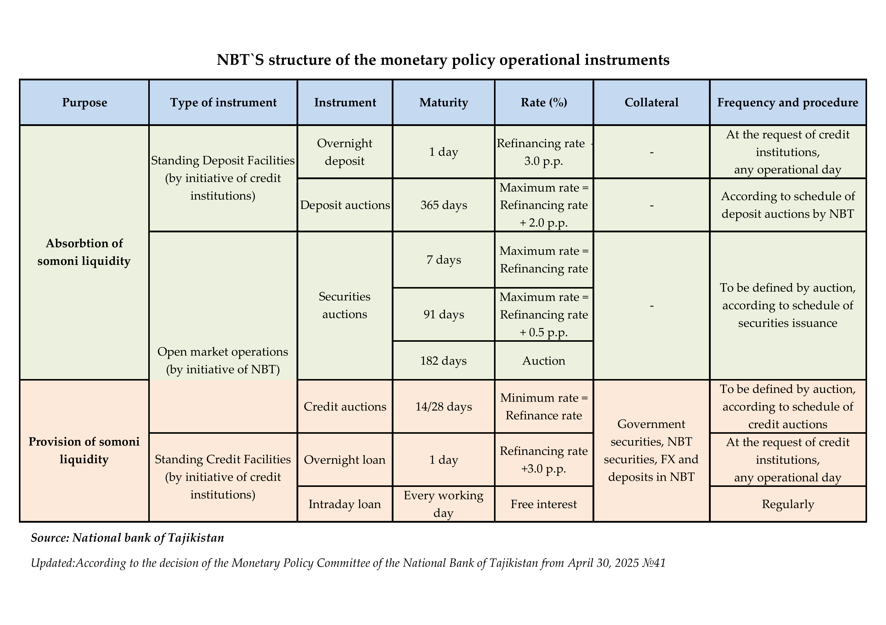

The National Bank of Tajikistan uses the following levers (instruments) to fulfill its tasks and objectives in the field of monetary policy:
According to the Law of the Republic of Tajikistan "On the National Bank of Tajikistan", the refinancing rate is the minimum interest rate at which the National Bank of Tajikistan provides loans to credit institutions, or the rate of return at which the National Bank of Tajikistan provides loans to Islamic credit institutions.
At the same time, the refinancing rate is considered the main lever of monetary policy for conducting monetary transactions and is established on the basis of a comprehensive analysis of target indicators, potential internal and external risks, as well as the position of monetary policy.
The refinancing rate plays an informational and signaling role, describing the direction and position of monetary policy for the future (medium or long term).
Monetary policy for the next period is determined by the change in the refinancing rate compared to its equilibrium level. In economic literature, the equilibrium state of the refinancing rate is called the neutral interest rate.
The fact that the refinancing rate is equal to its neutral (equilibrium) rate indicates the presence of a balanced level of supply and demand, stable economic growth within its potential, and a stable level of inflation within the established target indicator.
If the refinancing rate is above (below) its neutral level, this indicates a tight (soft) monetary policy.
Open market operations are one of the most active and effective instruments of monetary policy. They involve withdrawing liquidity (free cash in credit institutions' correspondent accounts with the National Bank of Tajikistan) or providing liquidity to the banking system through auctions. An important feature of this instrument is that it allows the National Bank of Tajikistan to actively influence the level of liquidity and short-term interest rates in the market.
According to modern international practice, the National Bank of Tajikistan's open market operations are generally divided into two groups:
The issuance of securities is one of the main indirect instruments of monetary policy and allows the National Bank of Tajikistan to attract excess liquidity from the banking system and regulate the money supply through securities auctions. Securities auctions are held regularly according to a schedule through an electronic trading system in real time (online). The interest rate for applications from credit institutions is set by the Monetary Policy Committee of the National Bank of Tajikistan. The legal framework, procedure, and conditions for these operations are governed by Instruction No. 189 "On Securities of the National Bank of Tajikistan."
A credit auction is a short-term loan facility for which credit institutions submit applications to obtain short-term liquidity from the National Bank of Tajikistan. Credit auctions of the National Bank of Tajikistan are held according to a schedule. The interest rate for credit institution applications is set by the Monetary Policy Committee of the National Bank of Tajikistan. The legal framework, procedure, and conditions for these operations are governed by Instruction No. 220 "On Short-Term Refinancing Operations."
Standing instruments (overnight) are used by the National Bank of Tajikistan by attracting or providing overnight liquidity to regulate short-term interest rates in the interbank market, develop the money market, ensure the effectiveness of monetary policy, and facilitate the efficient and continuous functioning of the payment system.
The National Bank of Tajikistan offers credit institutions several standing overnight instruments:
A loan provided to a credit institution against collateral at a set interest rate during the business day, with the condition of its repayment no later than the next business day. The interest rate for credit institution applications is set by the Monetary Policy Committee of the National Bank of Tajikistan. The legal framework, procedure, and conditions for these operations are governed by Instruction No. 220 "On Short-Term Refinancing Operations."
A loan provided against collateral during the business day, with the condition of its repayment at the end of the business day. The legal framework, procedure, and conditions for these operations are governed by Instruction No. 220 "On Short-Term Refinancing Operations."
An overnight deposit is a short-term deposit operation whereby a credit institution places funds in national currency with the National Bank of Tajikistan with the understanding that they will be repaid on the next business day. The interest rate for credit institution requests is set by the Monetary Policy Committee of the National Bank of Tajikistan. The legal framework, procedure, and conditions for these operations are governed by Instruction No. 226 "On Conducting Short-Term Deposit Operations in National Currency by the National Bank of Tajikistan."
An auction during which the National Bank of Tajikistan accepts funds from credit institutions in national currency on terms of repayment, payment of interest, and maturity. Deposit auctions of the National Bank of Tajikistan are conducted according to plan. The interest rate for applications from credit institutions is set by the Monetary Policy Committee of the National Bank of Tajikistan. The regulatory framework, procedure, and conditions for these operations are governed by Instruction No. 226 "On the Conduct of Short-Term Deposit Operations in National Currency by the National Bank of Tajikistan."
Required reserves are one of the instruments for implementing the monetary policy of the National Bank of Tajikistan and constitute a mechanism for regulating the overall liquidity of the banking system.
Credit institutions ensure compliance with mandatory reserve requirements in national currency by maintaining funds in a correspondent account opened with the National Bank of Tajikistan in accordance with the mandatory reserve calendar.
A credit institution forms mandatory reserves in foreign currency by transferring funds to the corresponding account opened with the National Bank of Tajikistan for these purposes.
Foreign currency operations include the purchase and sale of foreign currency on foreign exchange markets. These operations are carried out within the framework of the National Bank of Tajikistan's foreign exchange policy and generally pursue two main objectives:
Stabilizing excessive fluctuations in the somoni exchange rate against foreign currencies and the domestic foreign exchange market.
Increasing international reserves and bringing their volume up to the required level of international reserve stability standards.
Foreign currency transactions in the interbank foreign exchange market are carried out through foreign currency auctions, spot transactions, and swap/forward transactions through the electronic trading system.
